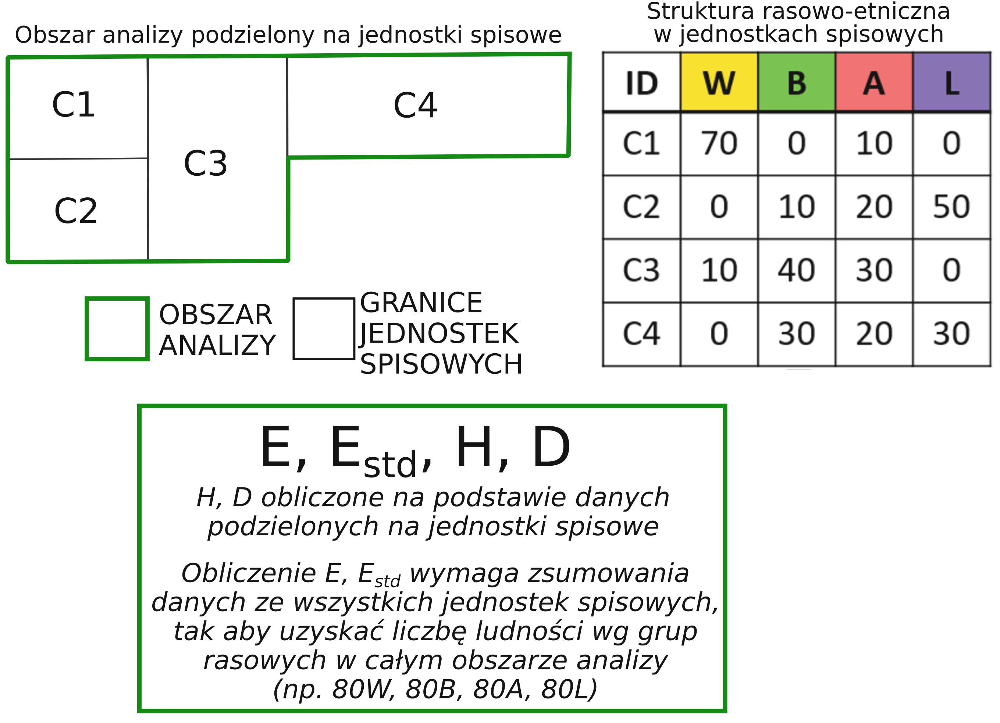
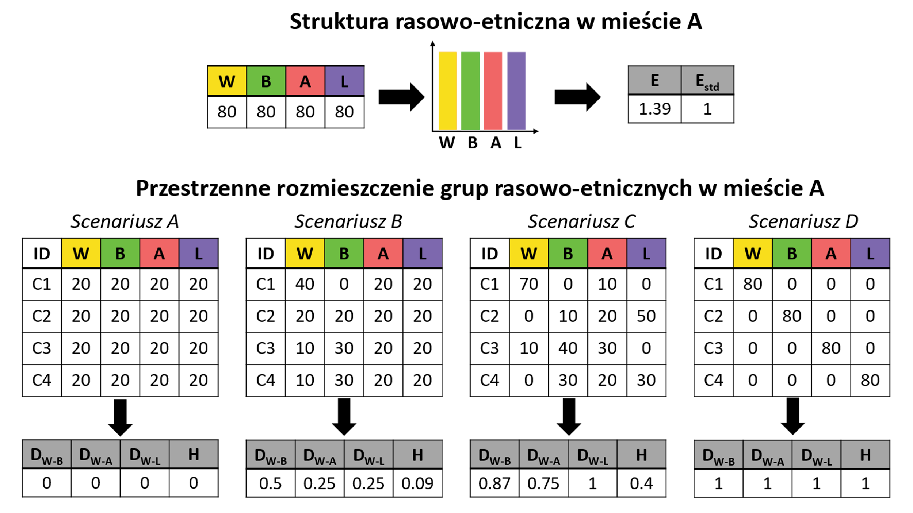

a = c(0.125, 0.125, 0.25, 0.5)
a*2[1] 0.25 0.25 0.50 1.00log2(a)[1] -3 -3 -2 -1a*log2(a)[1] -0.375 -0.375 -0.500 -0.500-sum(a*log2(a))[1] 1.75Celem ćwiczeń jest stworzenie zestawu narzędzi (funkcji w języku R), które posłużą obliczeniu tradycyjnych miar segregacji oraz zróżnicowania rasowego. Funkcje/narzędzia będą wykorzystywane na kilku następych zajęciach.
Należy stworzyć narzędzia obliczające:
Stworzone funkcje należy przetestować na kilku przykładach (dane testowe zostały zapisane w plikach przyklad_a.csv, przyklad_b.csv, przyklad_c.csv, przyklad_d.csv, dane_przykladowe.csv)
Tradycyjne miary segregacji oraz zróżnicowania rasowo-etnicznego obliczane są na podstawie danych tabelarycznych przedstawiających liczbę osób wg kategorii rasowo-etnicznych w jednostkach spisowych, na które zostało podzielone miasto. Miary te obliczane są na poziomie hrabstw lub miast.
Obliczenie miar zróżnicowania rasowo-etnicznego wymaga zsumowania danych ze wszystkich jednostek spisowych, tak aby uzyskać liczbę ludności wg grup rasowo-etnicznych w całym obszarze analizy (np. 80W, 80B, 80A, 80L).
Obliczenie wskaźników segregacji rasowej wymaga podzielenia obszaru na mniejsze jednostki. Wartość wskaźnika zależy od przyjętego podziału na jednostki przestrzenne.

Miarą zróżnicowania rasowego jest entropia obliczana według wzoru:
\[E = -\sum p_{k} \log p_{k}\] Obliczenia należy wykonać dla jednostek dla których liczba ludnosci jest większa od 0.
Entropia standaryzowana obliczana jest według wzoru:
\[E_{std} = \frac{E}{E_{max}}\]
gdzie \(E\) - oznacza entropię, a \(E_{max}\) oznacza entropię maksymalną.
Entropia obliczana jest według wzoru: \[E = -\sum p_{k} \log p_{k}\]
Entropia maksymalna obliczana jest \(E_{max} = log(K)\), gdzie K to liczba grup rasowo-etnicznych.
Wskaźnik niepodobieństwa D obliczany jest według wzoru:
\[D = \frac{1}{2}\sum_{i}^{N}\left\lvert \frac{a_{i}}{A} - \frac{b_{i}}{B} \right\rvert\]
Wskaźnik teorii informacji H obliczany jest według wzoru:
\[H = \sum_{i=1}^{N}\left [ \frac{t_{i}(E - E_{i})}{ET} \right ]\]
gdzie
Entropia \(E\) obliczana jest w następujący sposób:
\[ \begin{aligned} E = - \left [ \frac{WHITE}{POP} \log \left ( \frac{WHITE}{POP} \right ) + \frac{BLACK}{POP} \log \left ( \frac{BLACK}{POP} \right ) + \frac{ASIAN}{POP} \log \left ( \frac{ASIAN}{POP} \right ) + \frac{HISPANIC}{POP} \log \left ( \frac{HISPANIC}{POP} \right ) + \frac{INDIAN}{POP} \log \left ( \frac{INDIAN}{POP} \right ) + \frac{OTHERRACE}{POP} \log \left ( \frac{OTHERRACE}{POP} \right ) \right ] \end{aligned} \]
Oblicz entropię dla danych zawartych w plikach przyklad_a.csv, przyklad_b.csv, przyklad_c.csv, przyklad_d.csv, dane_przykladowe.csv
Napisz funkcję w R obliczającą entropię.
Kilka uwag do obliczania entropii:
a = c(0.125, 0.125, 0.25, 0.5)
a*2[1] 0.25 0.25 0.50 1.00log2(a)[1] -3 -3 -2 -1a*log2(a)[1] -0.375 -0.375 -0.500 -0.500-sum(a*log2(a))[1] 1.75Oblicz entropię standaryzowaną dla danych zawartych w plikach przyklad_a.csv, przyklad_b.csv, przyklad_c.csv, przyklad_d.csv, dane_przykladowe.csv
Napisz funkcję w R obliczającą entropię standaryzowaną.
Dla 4 jednostek spisowych poniższy wzór na obliczenie wskaźnika niepodobieństwa będzie miał postać:
\[D = \frac{1}{2}\sum_{i}^{N}\left\lvert \frac{a_{i}}{A} - \frac{b_{i}}{B} \right\rvert = \frac{1}{2} \times\left [ \left | \frac{a_{1}}{A} - \frac{b_{1}}{B} \right | + \left | \frac{a_{2}}{A} - \frac{b_{2}}{B} \right | + \left | \frac{a_{3}}{A} - \frac{b_{3}}{B} \right | + \left | \frac{a_{4}}{A} - \frac{b_{4}}{B} \right | \right ]\] a, b to liczba osób danej grupy rasowej w jednostce spisowej, natomiast A i B to liczba osób z danej grupy rasowej zamieszkująca cały obszar.
Oblicz wskaźnik niepodobieństwa między grupami W i B oraz W i L dla danych zawartych w pliku przyklad_b.csv
Napisz funkcję w R obliczającą wskaźnik niepodobieństwa. Zastosuj tą funkcję do obliczenia wskaźników W-B, W-A, W-L dla danych zawartych w plikach przyklad_a.csv, przyklad_b.csv, przyklad_c.csv, przyklad_d.csv, dane_przykladowe.csv
Oblicz wskaźnik teorii informacji H dla danych zawartych w pliku przyklad_b.csv
Napisz funkcję w R obliczającą wskaźnik teorii informacji H. Zastosuj tą funkcję do obliczenia wskaźników dla danych zawartych w plikach przyklad_a.csv, przyklad_b.csv, przyklad_c.csv, przyklad_d.csv, dane_przykladowe.csv
Poniżej zostały zamieszczone wartości wskaźników segregacji oraz zróżnicowania rasowo-etnicznego dla w/w przykładów.

| ID | BIALI | CZARNI | AZJACI | LATYNOSI | RDZENNI_AMERYKANIE | POZOSTALI | POP |
|---|---|---|---|---|---|---|---|
| 40306 | 209 | 1450 | 130 | 2517 | 10 | 56 | 4372 |
| 40307 | 919 | 1431 | 915 | 1073 | 6 | 84 | 4428 |
| 40308 | 766 | 1374 | 278 | 1598 | 6 | 47 | 4069 |
| 40407 | 668 | 524 | 323 | 384 | 4 | 37 | 1940 |
| 40408 | 330 | 858 | 262 | 212 | 7 | 45 | 1714 |
| 40414 | 354 | 644 | 85 | 480 | 1 | 28 | 1592 |
| 40415 | 97 | 1376 | 44 | 899 | 8 | 42 | 2466 |
| 40416 | 576 | 977 | 278 | 709 | 4 | 65 | 2609 |
| Dwa | Dwb | Dwl | H | E | Estd |
|---|---|---|---|---|---|
| 0.1925452 | 0.2643989 | 0.3634019 | 0.0655884 | 1.347994 | 0.7523296 |